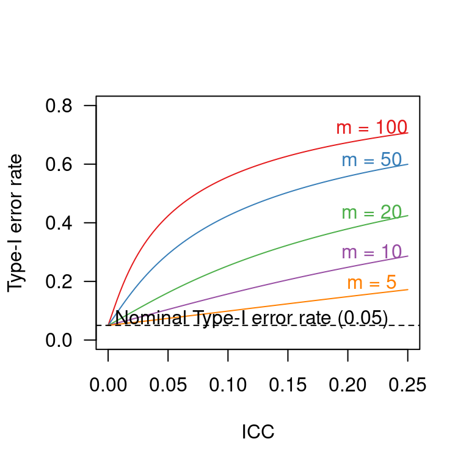

typeI.fnc <- function(k = 10, m = 20, ICC = 0.1) {
# Computation from Hedges 2007,
# where ICC is the intra-class correlation coefficient,
# k the number of clusters and
# m the number of observations per cluster
h <- (((k*m - 2) - 2*(m-1)*ICC)^2) / (((k*m-2)*(1-ICC)^2 + m*(k*m - 2*m)*ICC^2 + 2*(k*m - 2*m)*ICC*(1-ICC)))
c <- sqrt((((k*m-2)-(2*(m-1)*ICC))/((k*m-2)*(1+(m-1)*ICC))))
critical.value.t <- qt(0.975, k*m-2)
return(2*(1-pt(c*critical.value.t, h)))
}Experiments with intact groups: spurious significance with improperly weighted t-tests
significance
design features
cluster-randomised experiments
R
When analysing experiments in which intact groups (clusters) were assigned to the experimental conditions, t-tests on cluster means that weight these means for cluster size are occasionally used. In fact, I too endorsed this approach as a straightforward and easily implemented way to account for clustering. It seems, however, that these weighted t-test are still anti-conservative, i.e. they find too many significant differences when there is in fact no effect. In this post, I present simulation results to illustrate this and I also correct another published error of mine.
What are cluster-randomised experiments again?
Cluster-randomised experiments are experiments in which whole groups, rather than individual participants, are assigned to the experimental conditions. In education, for instance, it is often impractical or undesirable to randomly assign individual students to a new pedagogical programme or a control programme. Instead, entire classes or even entire schools or school districts are assigned to one of the programmes, and all students within the class, school or school district (‘cluster’) participate in the same programme.
This seemingly minor difference between cluster-randomised experiments and typical randomised experiments has enormous consequences for the way in which the data should be analysed. See the blog post on Analysing experiments with intact groups for more details.
Weighting clusters for their size
In a paper on Analyzing randomized controlled interventions, I wrote the following on analysing cluster-randomised experiments:
A conceptually straightforward approach [for taking clustering into account] is to calculate the mean (or another summary measure) of each cluster and run a t test on them rather than on the original observations. When the number of observations differs from cluster to cluster, a t test in which the cluster means are weighted for cluster size is recommended (see, e.g., Campbell, Donner, & Klar, 2007).
I regret that the recommendation to weight cluster means for cluster size does not stem from M. J. Campbell et al. (2007) but from M. K. Campbell et al. (2000): “When the size of the clusters varies widely, it is preferable to carry out a weighted t-test, using cluster sizes as weights” (pp. 193-194). From there, the recommendation can be traced back to Kerry & Bland (1998).
More imporantly, using cluster sizes as weights does not perfectly account for violations of the independence assumption, i.e. it does not guarantee that the Type-I error rate will be at its nominal level. I noticed this problem when running some simulations for a previous blog post. You can read about the details below or skip straight to the discussion.
The simulation
The full simulation code is available from GitHub. Here, I’ll just give you the main points.
The code first creates a dataset in individual data points form a number of clusters. The size of the cluster varies between clusters, and half of the clusters is assigned to the control condition and half to the intervention condition. There is both within- and between-cluster variance in the outcome measure (i.e., there is statistical clustering), but the intervention did not have any effect whatsoever (i.e., the null hypothesis is true).
Then, three analyses are carried out on the data. The first analysis ignores clustering altogether: a t-test on the participants’ outcomes. The second analysis is the weighted t-test introduced above: the data analysed are the cluster means, weighted for cluster size. The third analysis is an unweighted t-test on the cluster means. The p-values of each analysis are saved and the process is repeated a number of times.
For this simulation, I set the number of clusters to 10 (5 in the control, 5 in the intervention condition) with cluster sizes 8, 10, 13, 14, 41, 45, 50, 62, 80 and 86. (You’re welcome to change these numbers.) The intra-class correlation coefficient, which expresses the degree of clustering, was set to 0.1. The simulation was run 10,000 times.
Results
Seeing as the null hypothesis in this simulation was true, we should expect to find a significant difference between the control and intervention conditions in only 5% of cases. The naive analysis – the one that ignored clustering – had a hugely inflated Type-I error rate of 44%, which doesn’t come as a surprise. However, the weighted t-test also had an inflated Type-I error rate: it returned spurious significance in 9% of cases. The unweighted t-test, by contrast, was on par with a 5% Type-I error rate.
The numbers for the naive analysis and the weighted t-test vary depending on the ICC and the cluster sizes, but what’s important is that t-tests on cluster means weighted for cluster size find too many false positives.
Discussion and conclusion
I’m not sure where the recommendation to use t-tests with cluster means weighted for cluster size for analysing cluster-randomised experiments ultimately originates. In their book-length treatment of clusted-randomised experiments, Hayes & Moulton (2009)
list the weighted t-test as a theoretical alternative to the unweighted t-test on cluster means. (Actually, cluster proportions, but they claim that “[t]he extension to means and rates is obvious” (p. 178)). But the weights they propose aren’t merely the cluster sizes, but \(m / (1 + ICC * (m - 1))\) (where m is the cluster size and ICC the intra-class correlation coefficient). Using these weights in the simulation does result in a 5% Type-I error rate. As Hayes & Moulton note, however, this weighting requires that the ICC be known with great precision, which isn’t usually the case. Hence, they do not “generally recommend use of the weighted t-test unless there are good prior estimates of [the ICC]” (p. 179).
In conclusion, weighting cluster means for cluster size is not generally recommended. Unweighted t-tests on cluster means are still available as a straightforward alternative with an on-par Type-I error rate, whereas multilevel models present the analyst with more flexibility as regards the inclusion of covariates, modelling further hierarchical dependencies etc.
Another correction
In the Analyzing randomized controlled interventions paper, I included a graph to illustrate how Type-I error rates soar when clustering is ignored (Figure 1 on page 143). When running simulations, I noted that this graph slightly exaggerated the Type-I error inflation. The reason is that my analytical derivation of the Type-I error rate contained some errors.
Luckily, Hedges (2007) provides an analytical derivation whose results do agree with the simulated Type-I error rates. For the record, here it is in R form, along with the corrected plot:

The take-home message from both graphs is the same (ignoring clustering drastically increases Type-I error rates, more so for larger clusters and larger ICC values), but the precise Type-I error rates are somewhat lower.